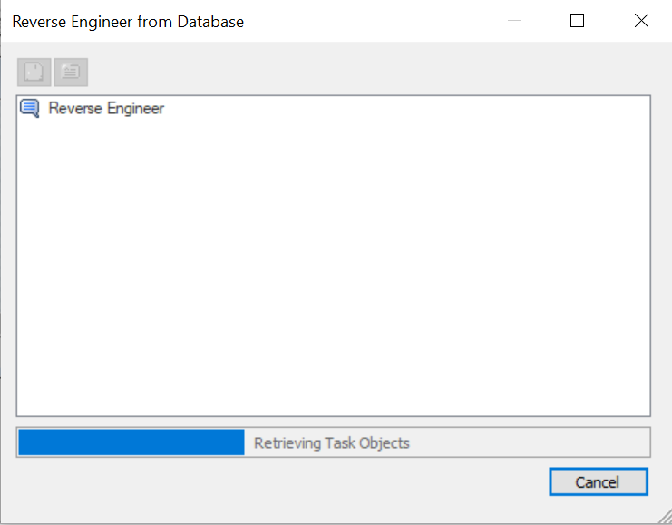

In erwin Data Modeler (DM), click Actions > Reverse Engineer.
The New Model screen appears.
Click Logical/Physical and set Database to Neo4j.
Click Next.
The Reverse Engineering Wizard appears.
Click one of the following options:
-
Database: Use this option to reverse engineer a model from your database.
If you click Database, continue to step 5.
-
Script File: Use this option to reverse engineer a model from a script. Selecting this option enables the File field. Click Browse and select the necessary script file.
If you click Script File, see step 13 below.
The Connection tab appears.
Enter your User Name and Password.
The following table explains the connection parameters:
Then, click Connect.
On successful connection, your connection information is displayed under Recent Connections.
Click Next.
The Databases tab appears. It displays a list of available databases.
 .
.This moves the selected database under Selected Databases.
Click Next.
The Label tab appears. It displays a list of available labels in the databases that you selected in step 9.
Under Available Labels, select the labels that you want to reverse engineer. Then, click .
Click Next.
The Option Set tab appears. It displays the default option set. You can either use the default or a custom option set.
Click Next.
The Detailed Options tab appears. Set up appropriate options based on your requirement.
Click OK.
The reverse engineering process starts.

Once the process is complete, based on your selections, a schema is generated and a model is created.
You can edit the shape of the nodes to look like the standard table-like structure. To change the node shape, on the ribbon, click View > Field. You can also change the label color, size, and caption using the Properties pane.